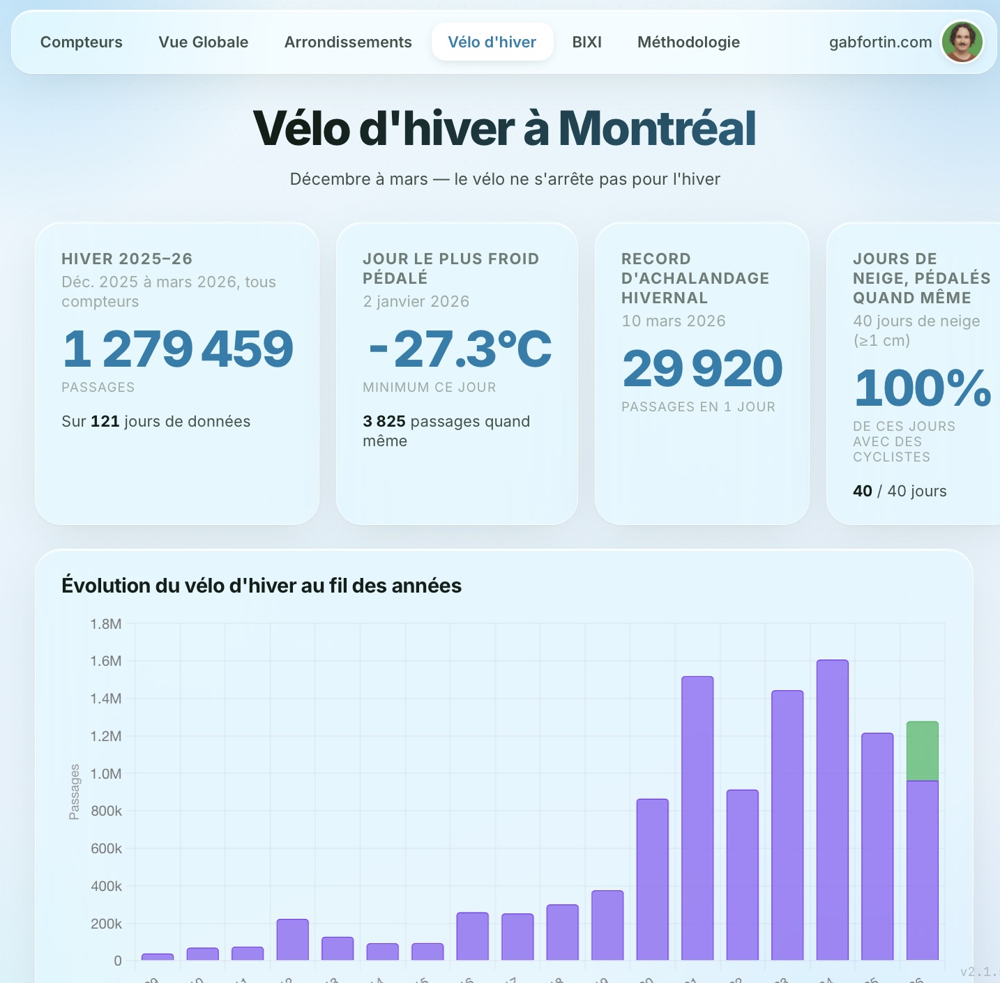

On a beaucoup entendu parler de données sur le vélo dernièrement. Certaines pistes cyclables seraient peu utilisées en hiver, ce qui justifierait d'en démanteler une partie pendant la saison froide.
Si on veut parler de données (une vision et les moyens mis en place pour la réaliser devraient toujours se baser sur les données plutôt que sur les perceptions), encore faut-il les citer de façon transparente et honnête.
Des données difficiles d'accès
Les données des compteurs cyclistes ont connu quelques problèmes au cours de la dernière année : le financement pour Éco-Compteurs avait été coupé par l'administration de la Ville de Montréal, rendant les données des compteurs indisponibles pendant plusieurs mois. Certaines données restaient disponibles dans les données ouvertes de la Ville, mais impossibles à consulter pour une personne sans connaissances en informatique. J'avais donc créé un site Web pour regrouper et analyser les données d'utilisation des pistes cyclables de la Ville, afin de rendre la consultation disponible pour toustes.
Un nouvel onglet : Vélo d'hiver
Afin de donner l'heure juste sur l'utilisation du vélo en hiver, j'ai récemment mis le site à jour en y ajoutant un onglet consacré au vélo d'hiver. On peut maintenant y consulter :
- les passages moyens selon le jour de la semaine et les conditions météo durant l'hiver;
- les journées où l'achalandage est le plus faible;
- à l'inverse, les journées où les pistes cyclables sont les plus fréquentées.

Si on veut prendre des décisions en se basant sur les données, assurons-nous de consulter les bonnes données et de les citer correctement. Je vous invite à explorer le site et à consulter les données par vous-mêmes.
Avez-vous repéré votre parcours? Les données semblent-elles bien refléter l'achalandage que vous y voyez, été comme hiver? Écrivez-moi à info@gabfortin.com.
Explorer les données du vélo d'hiver
compteurvelo.com